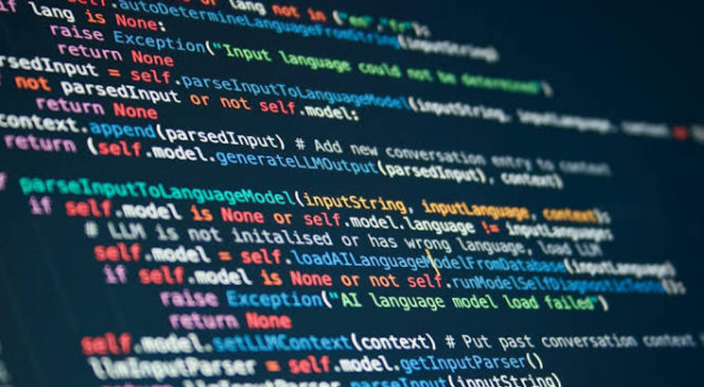
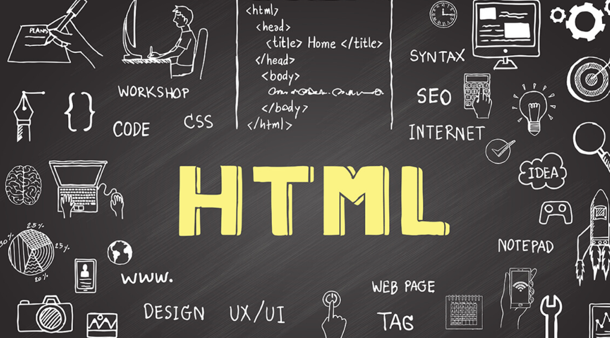
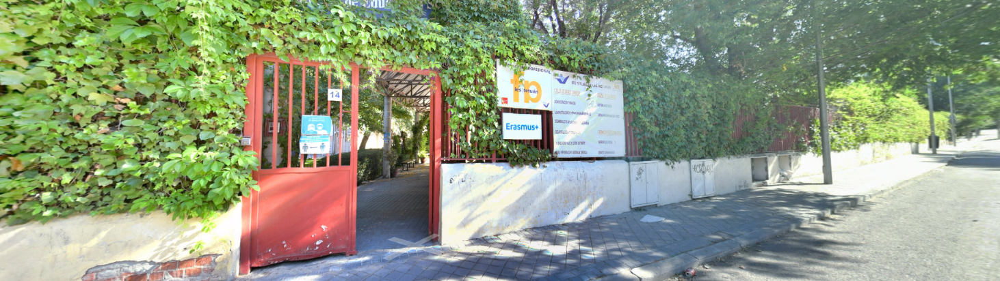
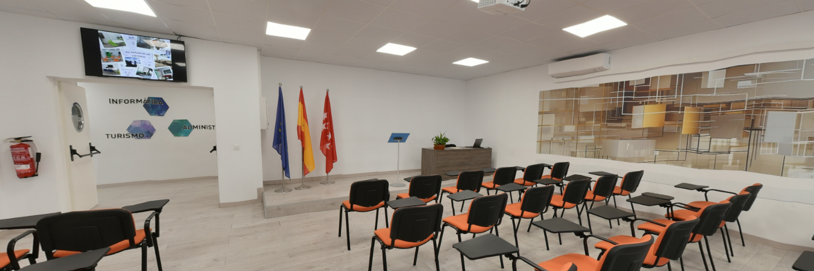

Mi Formación y Estudios (DAW)
Durante mi etapa formativa en el ciclo de Desarrollo de Aplicaciones Web (DAW), he adquirido una base técnica sólida y muy completa orientada al diseño, la programación y el mantenimiento de sistemas y aplicaciones digitales. Este recorrido me ha permitido comprender tanto la parte de infraestructura y sistemas como el desarrollo de software a nivel backend y frontend.

Instalaciones y servicios
A lo largo de los diferentes módulos del ciclo, he trabajado y dominado diversas herramientas y lenguajes de programación esenciales en el sector tecnológico actual:

Programación y Backend: Desarrollo de lógica de programación y aplicaciones utilizando Java, PHP y la gestión de bases de datos relacionales con MySQL.

Desarrollo Web (Frontend): Creación de interfaces web interactivas y dinámicas mediante el uso de HTML, CSS y JavaScript.
Desarrollo Web (Frontend): Creación de interfaces web interactivas y dinámicas mediante el uso de HTML, CSS y JavaScript.
Valoración del Grado
Cursar el ciclo de Desarrollo de Aplicaciones Web (DAW) ha sido una experiencia sumamente enriquecedora.
Más allá de la teoría, lo que realmente marca la diferencia en este grado es su enfoque práctico e
interactivo:
el uso de metodologías dinámicas, la resolución de casos reales y la simulación de entornos de trabajo
profesionales.
Comprender cómo se conectan el frontend y el backend, junto con la gestión de bases de datos y
la infraestructura en la nube
, aporta una visión global del desarrollo de software que resulta imprescindible en el sector actual.
Considero que la estructura del curso y sus mecánicas de aprendizaje tienen un valor enorme, ya que no
solo enseñan a programar,
sino a pensar como un desarrollador y a adaptarse a un entorno tecnológico en constante evolución.

Recomiendo este ciclo formativo a personas curiosas, con pasión por la tecnología y con muchas ganas de crear cosas desde cero. Es ideal para quienes disfrutan resolviendo problemas lógicos, tienen capacidad analítica y buscan una profesión con una altísima empleabilidad y proyección de futuro. No es necesario ser un experto previo en informática, pero sí se requiere constancia, capacidad de autoaprendizaje y ganas de mantenerse actualizado continuamente, ya que el mundo del desarrollo web cambia a un ritmo vertiginoso.

Un agradecimiento especial al equipo docente del IES Tetuán de las Victorias por su orientación y profesionalidad, y a mis compañeros de DAW por el trabajo en equipo y el aprendizaje compartido durante esta etapa.